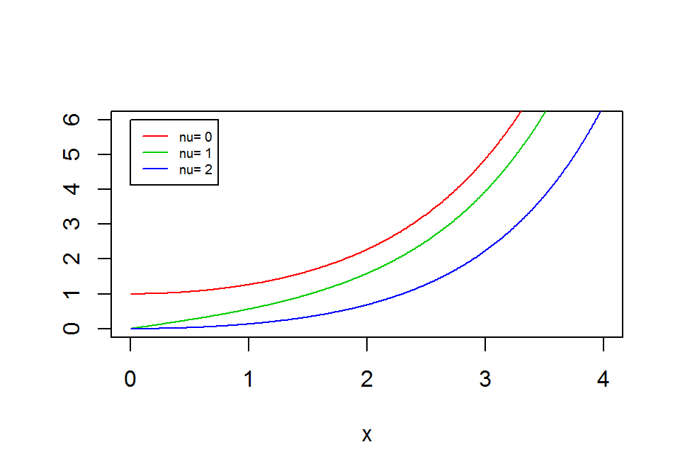

B Bessel Function
The modified Bessel function of the first kind can be described in the shape of a contour integral (below) and is plotted for three different \(\nu\) in Figure B.1.
\[\begin{align*} I_n(z)= \frac{1}{2 \pi i}\displaystyle \oint e^{(z/2)(t+1/t)}t^{-n-1}dt \end{align*}\]However, the Broadie-Kaya paper [31] presents it as a power series:
\[\begin{align*} I_{\nu}(z)= \left(\frac{1}{2}z\right)^\nu \displaystyle \sum_{k=0}^{\infty}{\frac{\left(\frac{1}{4}z^2\right)^k}{\left(k!\Gamma \left(\nu+k+1\right)\right)}} \end{align*}\]With \(\Gamma(x)\) is the gamma function and \(\nu\) ia a complex number.

Figure B.1: Modified Bessel Functions of the First Kind